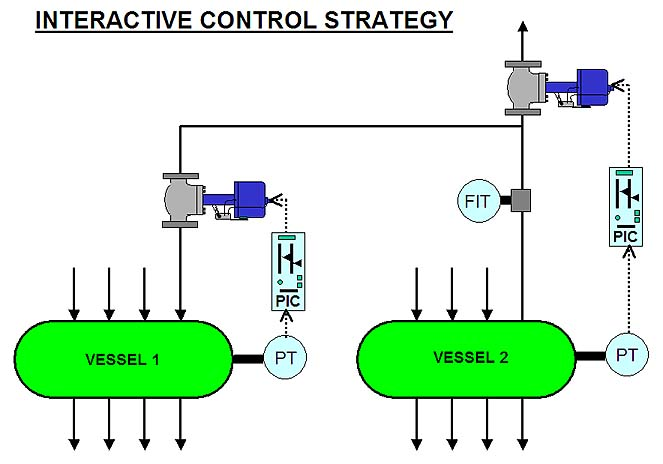
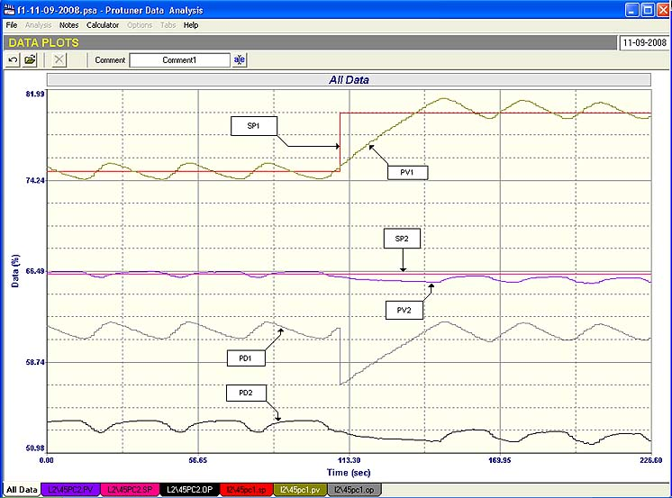
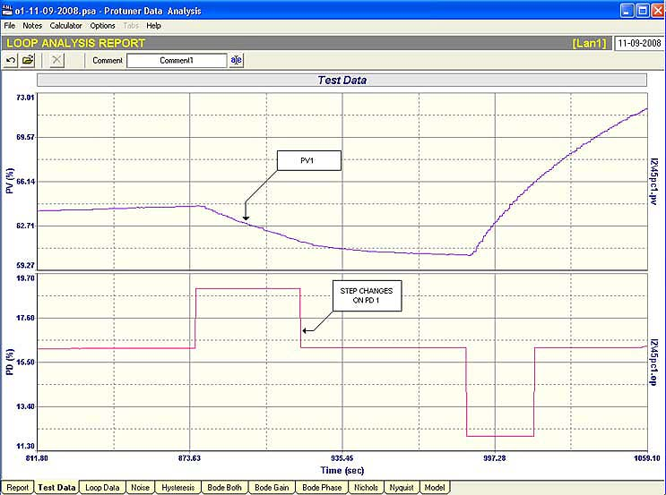
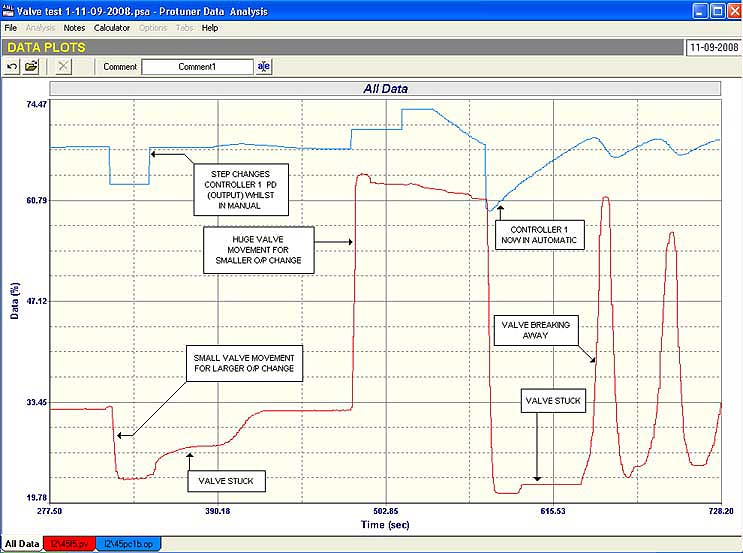

|
| [Home] [About us] [Contact us] [Training] [Optimisation services] [Protuner] |
| [Loop signatures] [Case histories] |
|
Control Loop Case History 104 For many years I have written often about the shocking state of control loops in plants world-wide. However I get little response to these remarks, and sometimes I feel I am really a lone voice crying in the wilderness. I was therefore extremely pleased to read an article by Fernando Otero in the June 2008 issue of Intech, the control magazine published by the ISA, widely regarded as one of the world leading organisations representing process control. Mr. Otero is an ISA Certified Automation Professional (CAP), and a senior member of the ISA. He has two chemical engineering degrees and is a process control consultant with Cornerstone Consultants in Indianapolis, USA. His article was entitled "Never Forget the Fundamentals of Process Control", and in it he defined the goal of an automatic regulatory control system as being able to maintain important process variables at set-point, and to be able to make the necessary compensations when disturbances occur in order to get the controlled process variable back to set-point. The purpose of the automation system is to ensure that the quality of the products is constant, uniform, and consistent. Mr. Otero admits that his job (like mine) is to work on problem loops. However he went on to say that invariably the problems are mostly caused by la ck of application of the fundamental rules of process control. He cited cases like two control valves placed in series in the same line trying to control different parameters but ending up fighting each other; unbelievably poor tuning, and in some cases a complete lack of tuning; over-filtering of PV values; unnecessarily long deadtimes caused by poor installations, etc. All of these things have been discussed many times before in these Case History articles and in the Loop Signature series of articles. The article ended with Mr. Otero pointing out that things should work properly after so much money is invested in plant automatic control systems. How often have I said why put so much money into these things, and then not bother to spend a bit more to get them to work properly? I exchanged emails with Mr. Otero after reading his article, and I quote from his reply:
It is good that other people also have experienced the same things I am always "going on about". I have been told by some people who claim expertise in the control field, that I exaggerate very badly. One gentleman in particular who also offers a control consulting service told me that my claim that 85% of all control loops world wide were completely inefficient in automatic was absolute nonsense. (He did not take me up on my offer to spend a day in any plant of his choosing, where I would prove my claim to him.) I really believe that the main reason people do not bother generally to get control working is due to complacency. Their plants have been working that way over many years, and everyone accepts that "this is the way it is". It is very difficult to motivate management to invest money and resources in optimisation, as it is extremely hard in most cases to prove what economic benefits can be gained by improving control. I have been told on more than one occasion by a control manager that he already has enough problems to contend with without uncovering more Remarks like: "If the operators and process people are happy, leave things well alone" are very common, and regrettably understandable. However to me it still seems such a shame and waste of resources that control systems usually costing millions of dollars, are not used properly. Certainly some companies that I know about, and who have applied optimisation efforts successfully, have made remarkable savings and dramatically improved ROI (return on investment). However the sad thing about it is that for some strange reason they never publish these figures. If they did it would certainly be useful to show others of what could be achieved. The case history example given in this article is of a very interactive control strategy which I recently came across whilst doing some work in a chemical plant, and it shows the effects of what can happen to controls when problems occur, particularly in interactive systems. It also illustrates the lack of control knowledge applied when designing control systems in a new plant. Figure 1 shows the basic processes, which are fairly complex. There are two essentially separate vessels with both liquid and gaseous products going into and out of them.. A gas vented from Vessel 2 is partially fed into Vessel 1 via a control valve, and the remainder is sent to another process downstream. The pressure in Vessel 2 is controlled as can be seen in Figure 1 by a pressure controller which operates the control valve in line between the two vessels.  Fig. 1 The pressure in Vessel 2 is also controlled via a valve on the gas outlet pipe, but this is mounted downstream of the T-off connection to Vessel 1. It is pretty obvious at once that these two control loops must be interactive. If the valve on Vessel 2 moves, it will not only effect the pressure in Vessel 2 directly, but it will also effect the differential pressure across the control valve controlling Vessel 1’s pressure, and hence will cause a pressure change in Vessel 1 as well. Visa versa if the valve on Vessel 1 moves it must effect the pressure in both vessels also. The big danger inherent with interactive systems is of course that the control loops may "fight" each other and cause cycling. The first thing one should do if called in to optimise a loop, and if you suspect that it may interact with another loop, or loops, is to determine the likely degree of interaction, to determine if it really a problem, and if it is, how serious is it? In the present example, it can be seen by looking at the diagram shown in Figure 1, that the degree of interaction here will largely depend on the amount of gas being drawn from Vessel 2 into Vessel 1. If only a small proportion of the gas coming out of Vessel 2 is going to Vessel 1, then the interaction will not be so bad as it would be if a large proportion of the gas goes to Vessel 1, as a changes in the draw-off of small amount of gas to Vessel 1 would not have a severe effect on the output pressure of Vessel 2. In such a case one could virtually ignore what was going on in the pressure control of Vessel 1 as far as Vessel 2 is concerned. (However changes in pressure on the output of Vessel 2 would of course have an effect on the Vessel 1 pressure.) How does one determine the degree of interaction and the effects of the one loop on the other, and visa versa? The easiest way is to connect up a good recorder or analyser to the inputs (PV’s) and outputs (PD’s) of each loop that you feel could effect each other or the others, put all the controllers of the loops concerned in manual, and then make a step change on the output of each loop, one by one, taking care to ensure that all PV’s stabilise after the change, before moving on and changing the next PD.  Fig. 2 In this particular case this wasn’t really necessary. Figure 2 shows a recording of a closed loop test done showing the PV’s, PD’s and SP’S of each of the two pressure control loops. It is immediately apparent that the loops are both cycling badly, very much in the same phasing, which would confirm a high degree of interaction. What can one do with interactive loops? Relatively advanced techniques like dynamic decoupling (or simple multivariable control) can be instituted, where feedforwards are applied in each direction between the loops to cancel out the interactive effects. (This is covered in detail in Loop Signature P2-5 which is available on my website www.controlloop.co.za.). However without going to such lengths one must try and minimise interaction. Operators are extremely good at doing this. How do they do it? Simple, they put one (if not both) controllers into manual. Voila! No more interaction Now manual control can be thought of as the infinite case of slow tuning on a controller in automatic. However it does stop interaction. If we do want to run interactive loops in automatic without applying advanced techniques, then all we can do is to tune one loop as fast as possible, and to slow the other to the point where interaction is minimised.. There is no other magic solution, apart from possibly revisiting, and changing the basic control strategy, which is normally very difficult to get done in an existing running plant. In this case it was decided to follow the tuning route, and it was also decided that Vessel’s 1 pressure was the most important, and this control would be the one to be tuned to give the fastest possible control. The pressure controller on Vessel 1 was put in manual to perform a tuning test. This open loop test is shown in Figure 3. As can be seen step changes on the controller output were made in each direction. Incidentally the pressure controller on Vessel 2 was also put in manual to eliminate interaction during these tests.  Fig. 3 The test shows that the process is definitely integrating, with the process ramping away from the balance point on the PD. However two things of note can be seen in the test. Firstly the response in the one direction is completely different from that in the other direction. Secondly and more seriously, the process did not stabilise and come back to balance after the last step which took the PD back to the original balance point. This could be due to several factors like a non-linear process, a load change, or a faulty valve. Due to the difficult nature of integrating processes, it is very difficult to be able to determine such things from the tests, as can be more easily done on self-regulating processes. It was decided to try each of the tunings obtained from the two responses on the controller to see which worked best. However it didn’t matter what sort of tuning was used. The loop immediately started cycling as soon as the controller was put into automatic. This also occurred even if the pressure controller on Vessel 2 was put into manual, which proved the cycling was not due to interaction. Now as described in Loop Signature P1-7 (available outside Southern Africa on my CD: "Trouble Shooting and Loop Tuning"), an integrating loop with valve hysteresis and with P+I tuning will always cycle continuously. Therefore the valve here was immediately under suspicion. The most effective way determining problems like hysteresis on a valve in an integrating process is to monitor the flow passing through the valve. In this case there is no flowmeter in series with the valve on Vessel 1, but as can be seen in Figure 1 there is a flowmeter measuring the total flow coming out of Vessel 2 and passing through both valves. Although not ideal, it would give a good indication of the changes in flow through Valve 1, if the other valve wasn’t moved (with controller 2 also in manual).  Fig. 4 Part of the test then performed by making changes on Controller 1’s PD and monitoring the flow, is shown in Figure 4. It is incredibly revealing. The valve is basically almost completely non-repeatable, it is very sticky, and there is no way at all that any sort of reasonable control can be obtained with it. In particular on an integrating process like this it will, and did, cause continuous cycling with the controller in automatic. In addition of course, with the high degree of interaction of Process 1 on the Process 2, it resulted in continuous cycles in both loops. Therefore there was little point in carrying on with tuning until the valve problem was sorted out. This interesting example is a good one in showing not only
the results of a poorly designed control strategy, but also what
bad effects can be caused on associated loops. Michael
Brown is a specialist in control loop optimisation, with many years of
experience in process control instrumentation. His main activities are
consulting, and teaching practical control loop analysis and
optimisation. He gives training courses which can be held in clients'
plants, where students can have the added benefit of practising on live
loops. His work takes him to plants all over South Africa, and also to
other countries. He can be contacted at:
|